Scenario 1 — Server-driven dine-in
12/12 steps passed · 28/5/2026, 1:58:05 pm
PASS 1.1 — Restaurant floor loads with T1
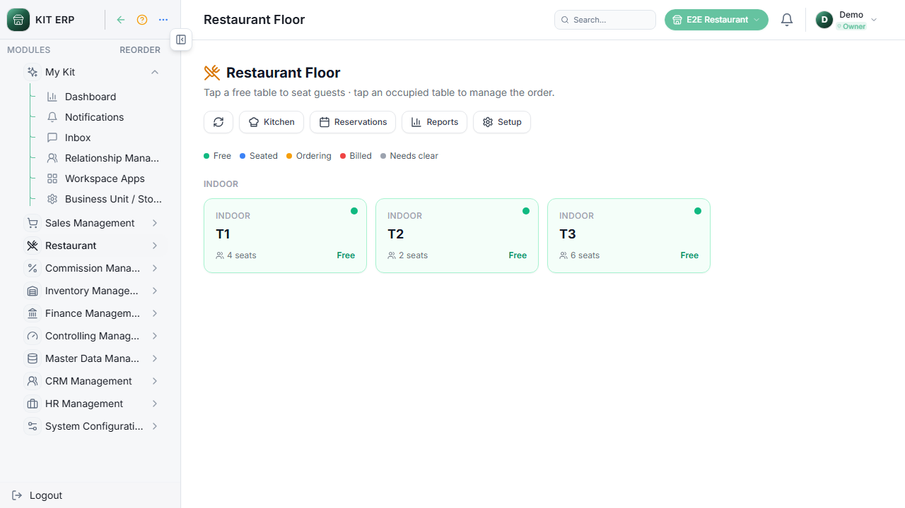
PASS 1.2 — Seat dialog opens for T1
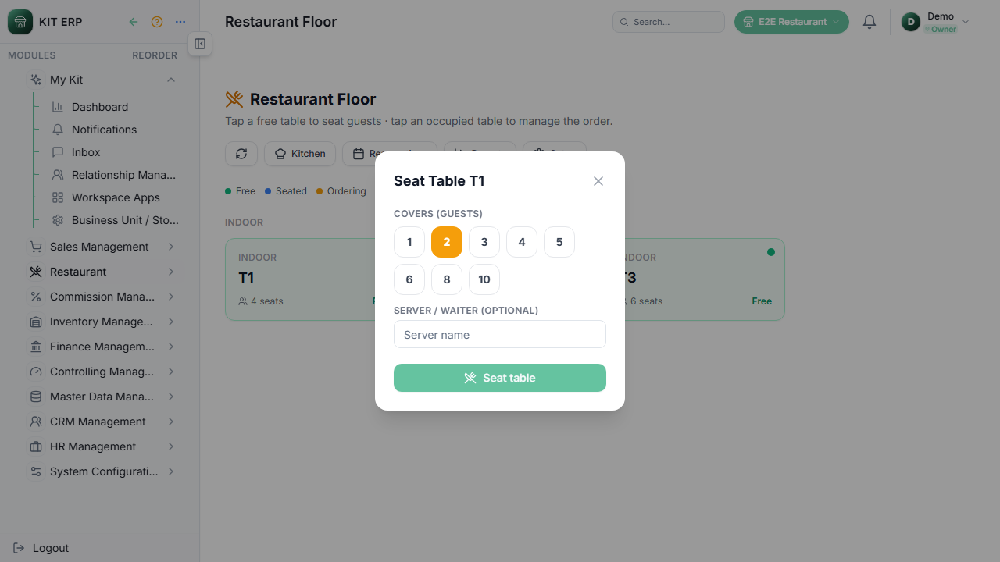
PASS 1.3 — Seated 3 covers, server Ravi
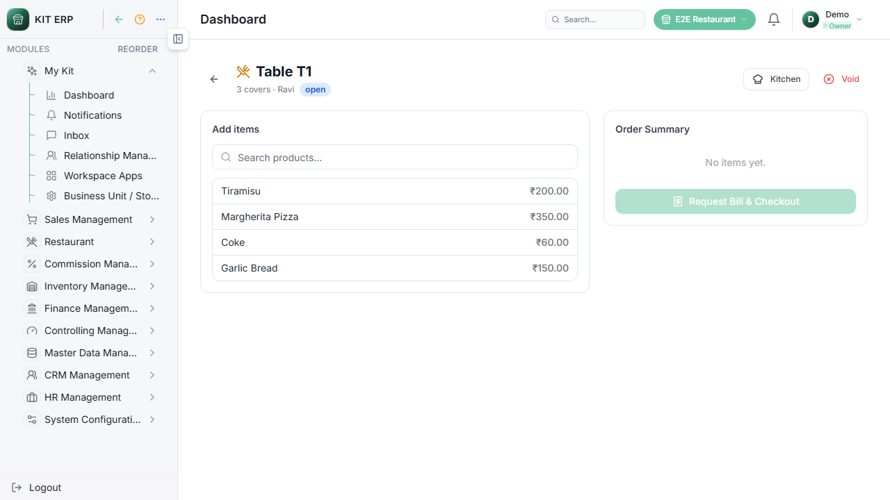
PASS 1.7–1.8 — Garlic Bread + Coke ×2 in pending
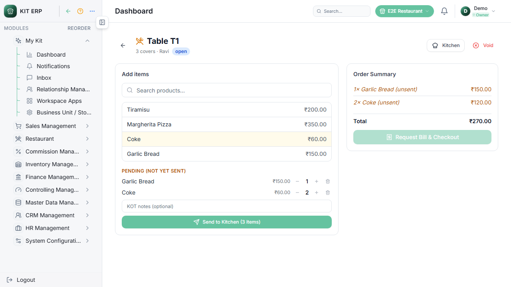
PASS 1.10 — KOT sent — order summary populated
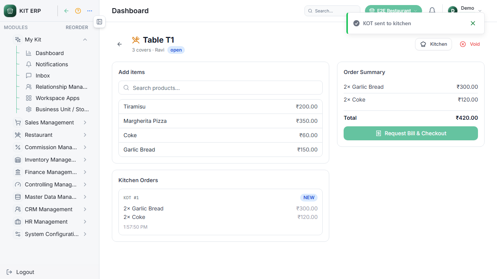
PASS 1.11–1.13 — Kitchen status transitions
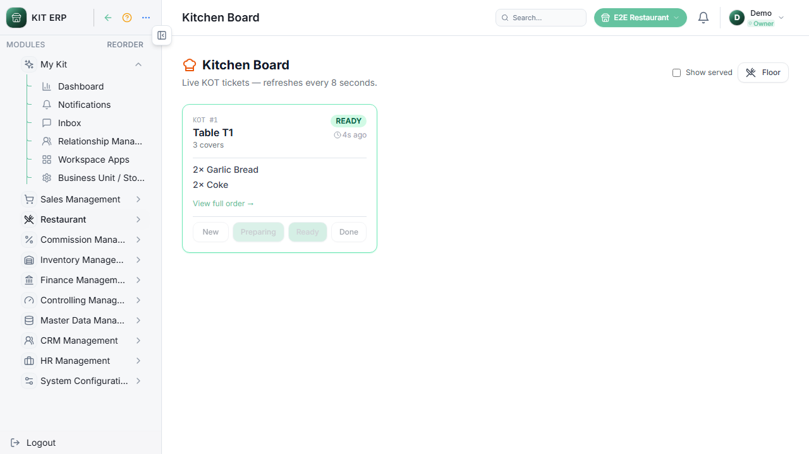
PASS 1.17 — Request Bill navigates to POS
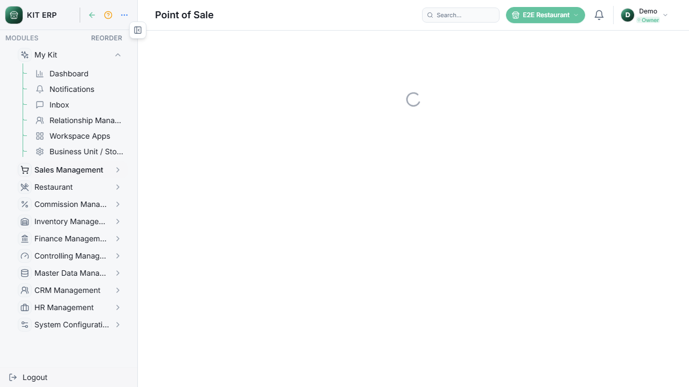
PASS 1.18 — POS cart prefilled from restaurant order
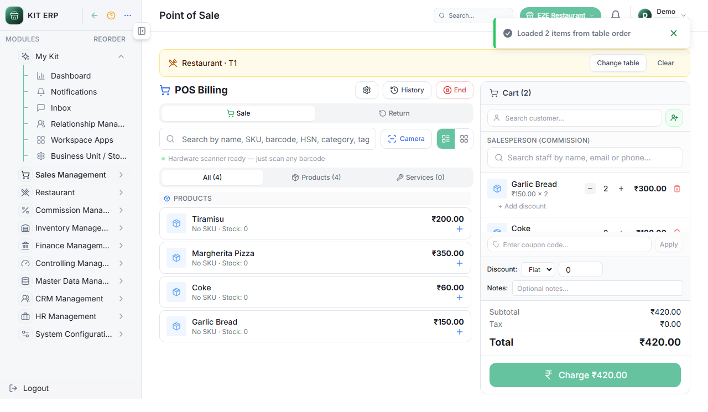
PASS 1.20 — Tip ₹50 and service charge ₹40
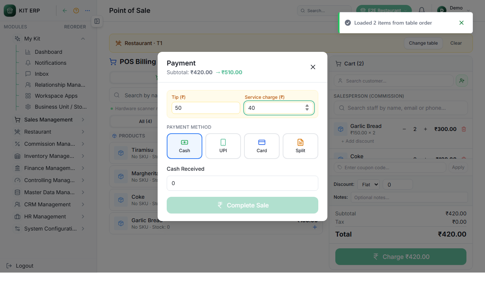
PASS 1.21 — Cash payment completed
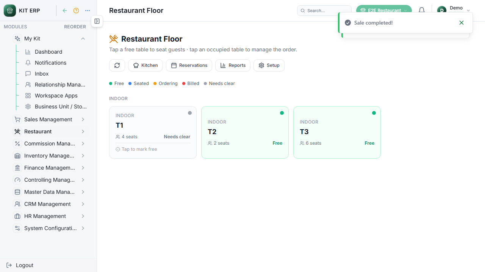
PASS 1.22 — T1 shows needs clear after payment
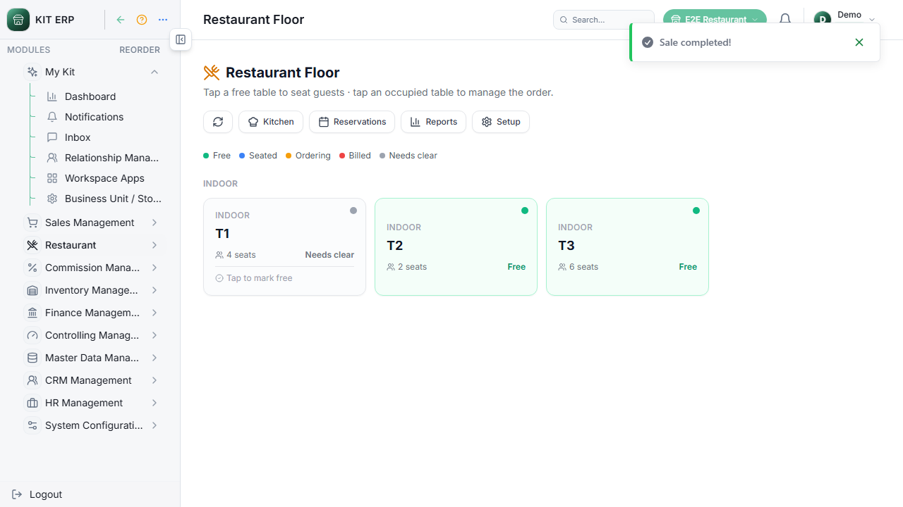
PASS 1.23 — Tap T1 clears table to Free
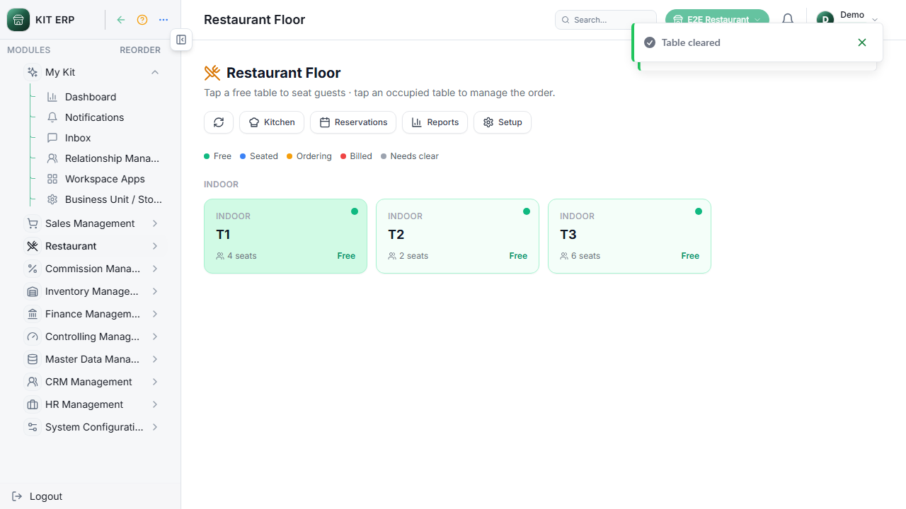